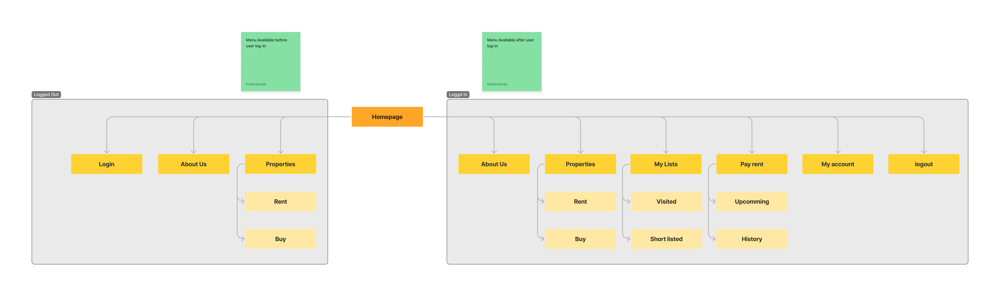
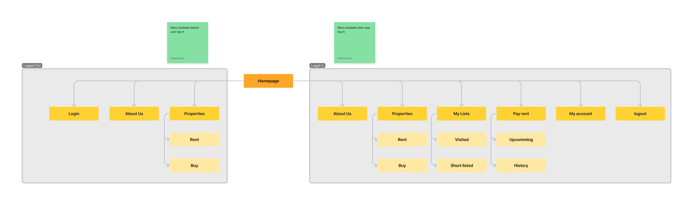
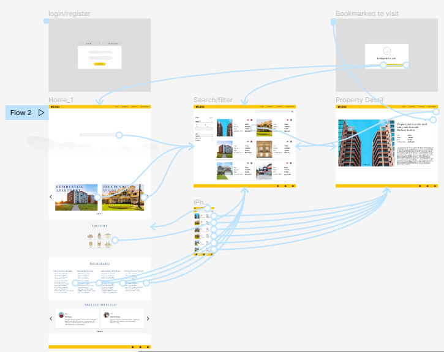
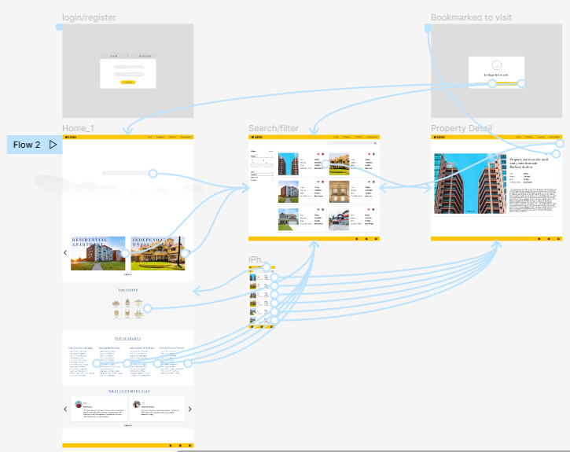
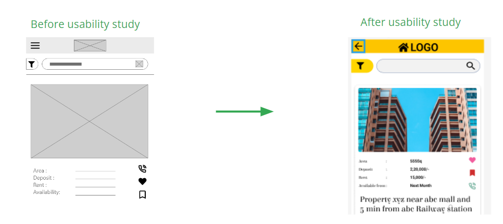
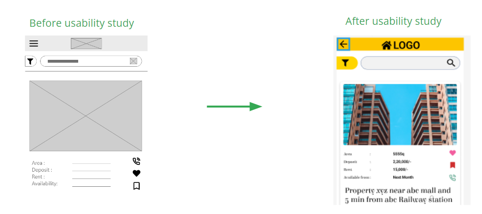

Rent Home app
My role
UX designer designing an app for searching place to live on rent from conception to delivery.
Project goal
List available properties for rent on one place so no need to look for a broker.
Target audience
A primary user group identified through research was young and middle age people.
Research study details
- Methode :Unmoderated usability study
- Location : Mumbai, India, remote.
- Participants : 5
- Lenghth : Each session last for 20-30 min.
Sitemap
My goal for the sitemap was to design a structure that was simple and easy to use.
View the RE App Link to sitemap

View the RE App Link to sitemap

Low-fidelity prototype with wireframes
Using the completed set of digital wireframes, I created a low-fidelity prototype. The primary user flow I connected was compare selected trailers, so the prototype could be used in a usability study. View the Rent home App
low-fidelity prototype

High-fidelity prototype
The final high-fidelity prototype presented cleaner user flows for Rent home.View the Rent home App
high-fidelity prototype


User testing results
Added back arrow on detail page so user can return to previously searched results.


What I learned
While designing the Rent home app, I learned that the Usability studies and peer feedback influenced each iteration of the app’s designs.
Next steps
Conduct another round of usability studies to validate whether the pain points users experienced have been effectively addressed.
Right now, the application is functioning well, which means we can move for improvements.